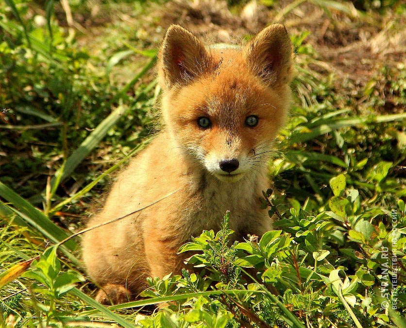

Лисы Камчадалы
Лисица, хотя и принадлежит к типичным хищникам, питается очень разнообразными кормами. Среди пищи, которую она употребляет, выявлено больше 400 видов одних только животных, не считая нескольких десятков видов растений. Повсеместно основу её питания составляют мелкие грызуны, главным образом полёвковые. Можно даже сказать, что от достаточности их числа и доступности в значительной мере зависит состояние популяции этого хищника. Особенно это относится к зимнему периоду, когда лисица живёт в первую очередь охотой на полёвок: зверь, учуяв под снежным покровом грызуна, прислушивается к его пискам или шорохам, а потом быстрыми прыжками ныряет под снег, или разбрасывает его лапами, пытаясь поймать добычу. Этот способ охоты получил название мышкование.
-

Фотоальбом
Более крупные млекопитающие, в частности зайцы, играют в питании много меньшую роль, хотя в некоторых случаях лисицы их целеустремлённо ловят (особенно зайчат), а во время заячьего мора могут поедать и трупы. Иногда большие лисицы могут нападать на детёнышей косули. Птицы в питании лисицы не так важны, как грызуны, хотя этот хищник никогда не упустит случая поймать птицу, которая оказалась на земле (начиная от самых мелких и до наиболее крупных, например гусей и глухарей), а также уничтожить кладку яиц или нелетающих птенцов. Лисица может похищать и домашних птиц, но, согласно наблюдениям зоологов, делает это намного реже, чем принято считать.
В пустынях и полупустынях лисицы часто добывают пресмыкающихся. В Канаде и северо-восточной Евразии лисицы, которые живут вдоль больших рек, сезонно питаются почти на 100% лососями, которые погибли после нереста. Летом лисицы поедают много жуков и других насекомых, а также, очень охотно, их личинок. В голодные периоды нередко питаются падалью.
Растительные корма — плоды, фрукты, ягоды, реже вегетативные части растений — входят в состав питания лисиц почти всюду, но более всего на юге ареала; впрочем, нигде они не играют ключевой роли в пропитании представителей данного вида. Наносят существенный урон посевам овса, поедая эти растения в состоянии молочной спелости.
Индивидуальный участок, который занимает пара или семья лисиц, должен обеспечивать их не только достаточным количеством корма, но и пригодными для устройства нор местами. Лисицы роют их сами, или (что случается часто) занимают пустующие норы барсуков, сурков, песцов и других роющих животных, приспосабливая их к своим нуждам. Бывают случаи, когда лисица живёт в норе одновременно с барсуком, но в разных её отнорах.
Чаще всего лисицы поселяются на склонах оврагов и холмов, выбирая участки с песчаным грунтом, защищённые от заливания дождевыми, грунтовыми и талыми водами. Даже если нора выкопана самостоятельно, не говоря уже о барсучьих и других, она обычно имеет несколько входных отверстий, которые ведут через более-менее длинные туннели в гнездовую камеру. Иногда лисицы используют естественные укрытия — пещеры, расщелины скал, дупла толстых деревьев. В большинстве случаев (но не всегда) жильё бывает хорошо покрыто густыми зарослями. Но его демаскируют длинные тропы, а вблизи — большие выбросы земли возле входов, многочисленные остатки пищи, экскременты и т. д. Нередко на «городках» лисиц развивается пышная сорняковая растительность.
Как правило, лисицы используют постоянные укрытия лишь в период воспитания детёнышей, а на протяжении остального года, в частности зимой, отдыхают в открытых логовах в снегу или траве. Но, спасаясь от преследования, лисицы в любое время года могут укрыться в какой угодно норе, которая найдётся в местах их обитания. Также во время воспитания потомства звери часто вынуждены несколько раз менять жилье из-за его заражённости паразитами.